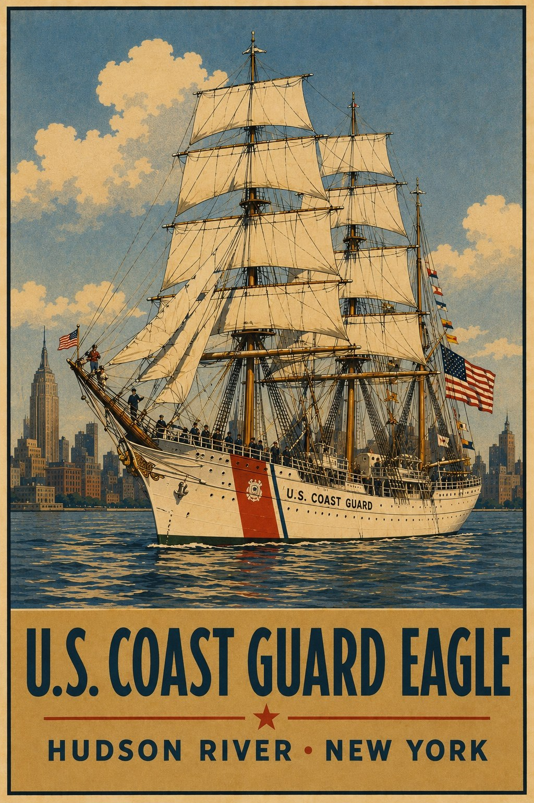
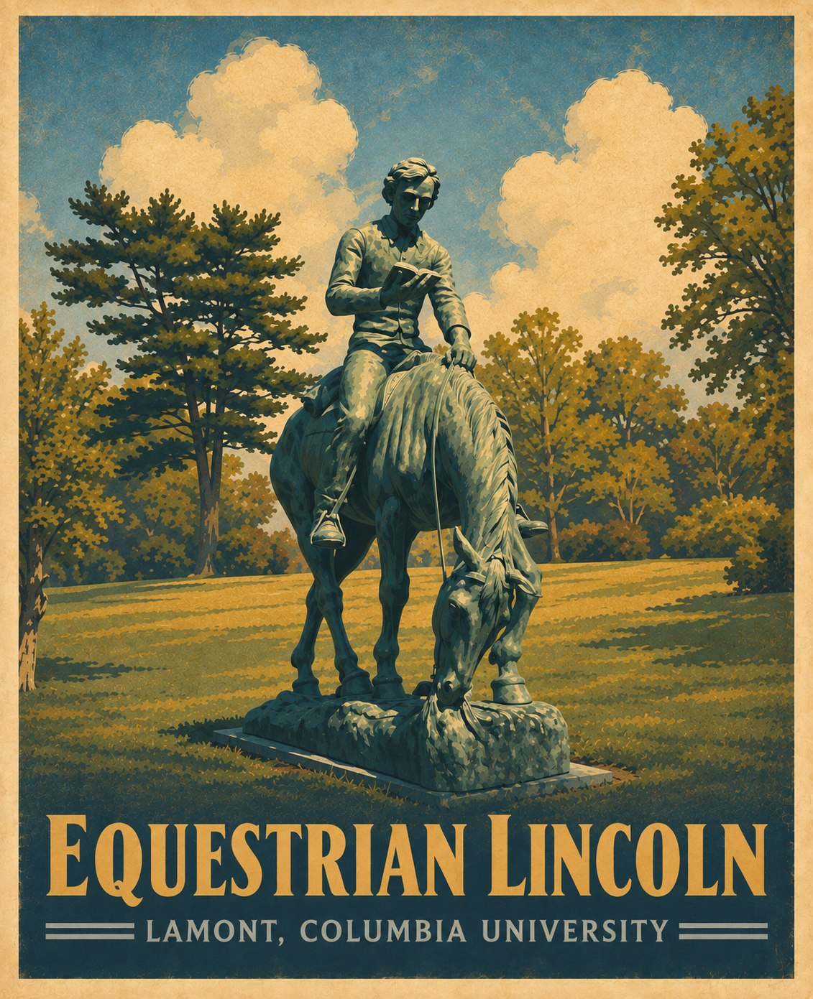
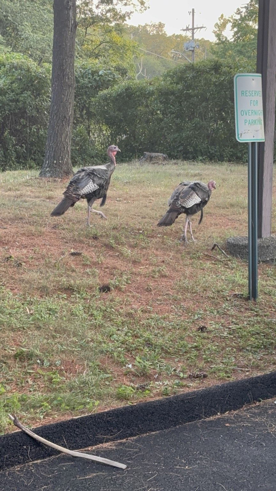
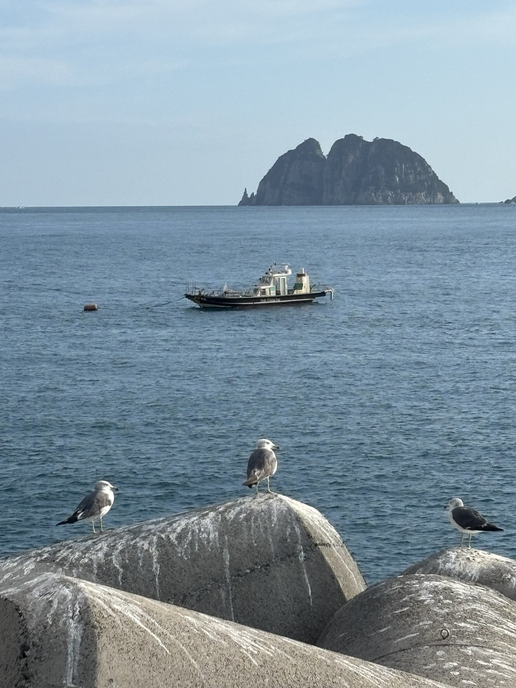
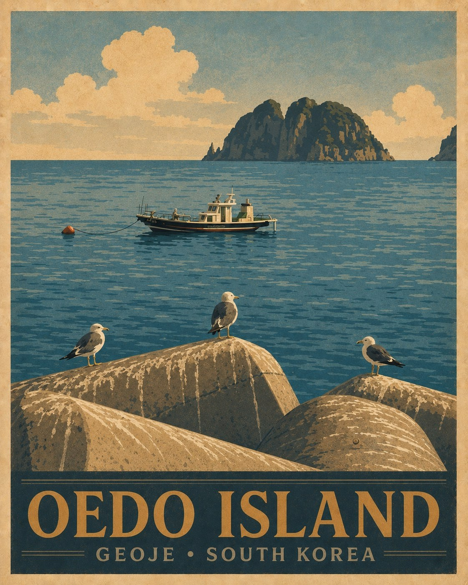

A long-term idea is to establish an independent research institute focused on quantitative approaches to decision-making under crisis and uncertainty, with applications to food insecurity, famine, displacement, and conflict.
Scholarly Puma & Dove
Heritage: Migration, Hunger, and Belonging
My family's roots in Castellammare del Golfo, Sicily, and Ireland are part of what drew me to the study of food insecurity, migration, and refugees. These histories make the relationship between hunger, political conditions, and human mobility more than an abstract research question.
For generations, Sicily experienced foreign rule, political upheaval, and persistent economic inequality, conditions that helped drive emigration in the late nineteenth and early twentieth centuries. On my Irish side, much of my family's migration history reaches back to the era of the Great Irish Famine (1845–1852), when crop failure, poverty, and political and institutional failures forced enormous numbers of people to leave. Both histories connect to New York, where migration reshaped families and communities.
New York's Irish Hunger Memorial in Battery Park City commemorates the Great Famine and explicitly connects that history to hunger in the world today. It is a powerful reminder of why the past remains relevant to contemporary food-security research.
My Sicilian-American flag project is another way of exploring this heritage through design, symbolism, and the experience of building a new identity across generations.
Family migration from Ireland and Sicily to New York in the nineteenth and early twentieth centuries.
Human–AI Creative Collaborations
An exploration of human–AI creative collaboration, combining original photography, historical visual styles, and iterative generative AI techniques to create artwork inspired by the American WPA poster tradition.
Why the WPA Poster Style?
I chose the visual language of American travel and public-information posters from the 1930s, particularly those associated with the Works Progress Administration (WPA) and its Federal Art Project. Their simplified forms, strong silhouettes, restrained color palettes, and bold lettering lend everyday scenes a distinctive sense of place.
Each artwork began with one of my original photographs. I worked iteratively with generative AI to refine the composition, flatten colors, simplify details, adjust contrast, and revise lettering and titles until the result more closely evoked posters from that period. The goal was not to copy a specific historical poster, but to reinterpret these places and moments through that design tradition.
Pepsi-Cola Sign
East River, New York City
Original photograph being prepared
Original photograph
Finished artwork being prepared
AI-assisted artwork
About the scene. A New York waterfront view featuring the landmark Pepsi-Cola sign and the United Nations sculpture Let Us Beat Swords into Ploughshares by sculptor Evgeniy Vuchetich in the foreground. The sculpture recalls Isaiah 2:4: “They shall beat their swords into plowshares, and their spears into pruning hooks.” I took the photograph after a food-systems meeting, shortly before the launch of FAO’s State of Food Security and Nutrition in the World (SOFI) report. Its agricultural symbolism resonates with my work on global food security.
U.S. Coast Guard Eagle
Tall ship on the Hudson River
Original photograph being prepared
Original photograph

Finished artwork being prepared
AI-assisted artwork
About the scene. The U.S. Coast Guard tall ship Eagle, photographed around July 3–4, 2026, during the Sail4th 250 celebrations marking the 250th anniversary of American independence. This is a more stylized interpretation than the other posters: I repositioned the ship within an imagined, WPA-inspired New York Harbor setting rather than preserving the photograph’s original composition.
Equestrian Lincoln
Young Abraham Lincoln on horseback
Original photograph being prepared
Original photograph

Finished artwork being prepared
AI-assisted artwork
About the scene. An equestrian depiction of Abraham Lincoln, interpreted through the monumental forms and limited palette of 1930s American heritage posters.
Wild Turkeys
Wild turkeys at Lamont

Original photograph being prepared
Original photograph
Finished artwork being prepared
AI-assisted artwork
About the scene. Wild turkeys at Columbia University’s Lamont-Doherty Earth Observatory. These birds have been part of the campus landscape for many years.
Spring Deer
Wildlife at Lamont
Original photograph being prepared
Original photograph
Finished artwork being prepared
AI-assisted artwork
About the scene. A deer photographed in daylight during spring at Columbia University’s Lamont-Doherty Earth Observatory, home to the Food for Humanity Initiative.
Oedo Island
Geoje, South Korea

Original photograph being prepared
Original photograph

Finished artwork being prepared
AI-assisted artwork
About the scene. Oedo Island, off Geoje, South Korea. Its coastal landscape is interpreted in the visual language of American WPA-era travel posters.
![WPA-style illustration of a scholarly puma statue with a white dove overlooking the Hudson River, Manhattan, the George Washington Bridge, and the Palisades.]()